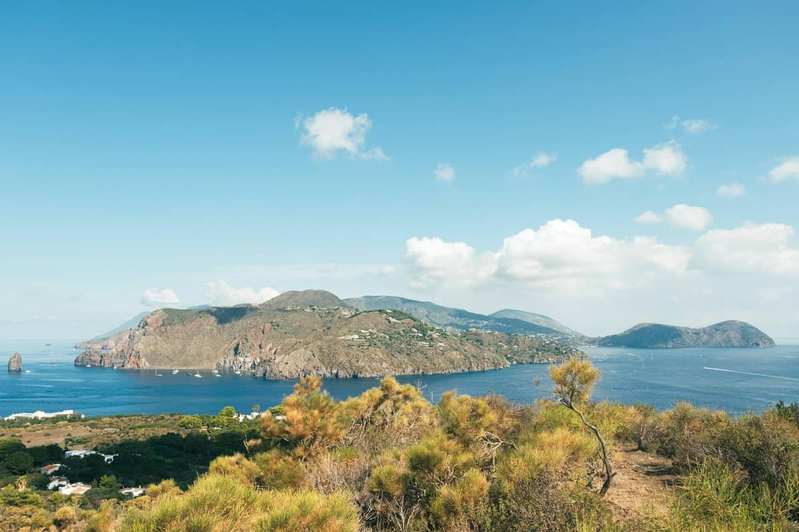

DIETRO IL SITO
IL PROGETTO
Uno sguardo sulle isole minori della Sicilia, tra luoghi, persone e senso di appartenenza.

01 / IL SITO
Un viaggio nella
vita delle isole.
“Crescere in un’isola” è un sito dedicato alle isole minori della Sicilia. Racconta i luoghi, le tradizioni e i legami che danno forma alla vita di ogni giorno.
Un percorso per andare oltre l’immagine della meta turistica e avvicinarsi a ciò che significa abitare un’isola, tra bellezza, appartenenza e sfide quotidiane.
02 / L’IDEA
Raccontare, per
conoscere meglio.
Ho realizzato questo sito per la materia di Web Design, con l’obiettivo di unire progettazione visiva e racconto del territorio.
Ho scelto di mettere al centro non soltanto i paesaggi, ma anche le persone e le relazioni: un invito a guardare le isole come luoghi da comprendere, non solo da visitare.
Non solo luoghi da visitare.
Luoghi da comprendere.
03 / CHI SONO
Martina Toscano
Sono Martina Toscano, una studentessa dell’Accademia di Belle Arti di Catania. Questo sito nasce dal mio percorso di studio: un’occasione per sperimentare come il web design possa organizzare contenuti e trasformarli in un racconto visivo.
AUTRICE
Martina Toscano
ACCADEMIA
Accademia di Belle Arti di Catania
MATERIA
Web Design
CONTINUA IL VIAGGIO
Le isole, da un altro punto di vista.
Scopri i luoghi e i legami al centro di questo racconto.